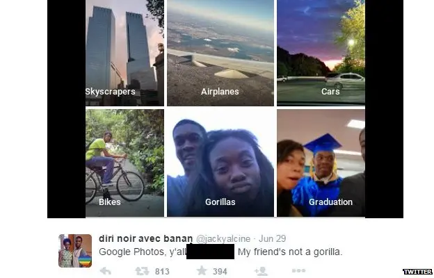
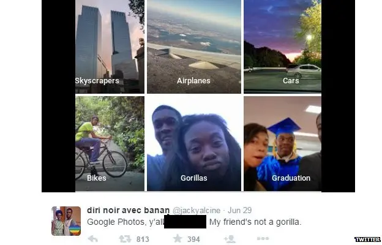
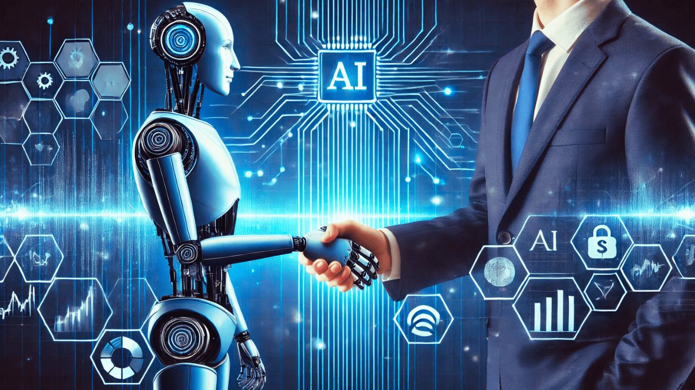

Photo tagging and facial recognition softwares
One of the new, shiny features rolled out in the past decade with phone updates was the auto-sorting of photos on your phone. But how well are they truly sorted?
Can a bunch of 0s and 1s carry the same biases as the most intelligent species on earth?
What is the problem at hand?
In a world increasingly shaped by Artificial Intelligence and related technologies, it is crucial, now more than ever, that we break down and look closely at the way these technologies are handling inherently human biases. From security features to hiring policies, we are putting defining responsibilities in the hands of technologies that have not been researched or safeguarded nearly enough.
In his article A philosophical analysis of AI and Racism, Lel Jones shares some scary statistics regarding the implications of AI involvement in these technologies. He presents how Google's facial recognition software recognized people of color as gorillas due to the lack of representation in their original dataset and how AI is replacing jobs in fields with disproportionately high levels of employment of people of color. These are obviously severe issues with detrimental consequences but are the algorithms themselves racist? And if so, what can be done?
Continue exploring this webpage to learn more about how AI works and the implications it is having on real people. I will argue that AI and similar algorithms can be considered racist based on Joshua Glasgow's view of racism as disrespect towards racialized groups. I will explore this argument through case studies, objections, and implications which can be navigated to by scrolling or through clicking each section on the navigation bar.
Familiarize yourself with the building blocks of the argument.
In this project I will use Joshua Glasgow’s theory of racism as disrespect to support my argument that AI and related algorithms can be racist. Glasgow understands racism as anything, an action, word, policy, sign, and so on, that disrespects a member of a racialized group on the basis of their membership in that group. In this context, he defines disrespect in moral terms. He says that disrespect is a failure to recognize an individual or group as an autonomous, deserving, morally significant being. On this view, racism is treating that individual or group as less deserving because of their race. Importantly, Glasgow applies this idea to both individual people and larger systems alike.
This definition is not tied to a particular ‘location’, such as the heart or beliefs, as some of his philosophical counterparts’ views are. That gives it the flexibility necessary to analyze the complex question of AI. According to Glasgow’s definition, there need not be conscious intention or ill will for there to be racism. The focus is widened from explicit hateful actions and slurs to include any case in which someone or something disrespects people on the grounds of race.
It's hard to determine whether AI can be racist without knowing how it works, and let's be honest, figuring out how your sheet of metal is talking to you like a human is not exactly intuitive. So let’s cover some of the basics of AI and machine learning before we try to nail down the argument.
There are many kinds of AI, but a lot of modern systems, including language models, follow a similar basic idea. You can think of AI as a big mathematical system that is solving for the best possible answer. Each word, phrase, sentence, or whatever chunk the algorithm works with is represented as numbers. When you ask an AI a question, it uses the big mathematical equation to give different possible output scores based on how likely or appropriate they are contextually. In the end it selects the chunk with the highest score to respond with. Think of semantically similar words, for example if I say the word "dog" in my query, the word “pet" is more likely to appear in an appropriate response than the word “pineapple.”
While using this system to determine its outputs, the algorithm is also shaped by the data it was trained on. This means that when an AI is first built it won’t work at all until it has processed a large batch of training data provided by its developers. Large AI models like ChatGPT, are built on massive training sets scraped from all corners of the internet, from Reddit to Wikipedia. So what AI says and does is, at its core, a reflection of purely human content. This is why we are able to build models for specialty purposes, like diagnosing diseases or telling jokes, by only providing the model with training data pertaining to those subjects.
With this better understanding, it is easier to see how these models can learn and reproduce human biases, including racist ones.
Click on each of the case studies to learn more about a real world example of racial biases in algorithms.
One of the new, shiny features rolled out in the past decade with phone updates was the auto-sorting of photos on your phone. But how well are they truly sorted?
Risk scores are supposed to help judges make fair decisions, but what happens when those scores treat some people as more dangerous than others?
Banks are turning to algorithms to decide who gets loans, but what happens, when “objective” credit scores quietly repeat our patterns of discrimination?
Click on each of the objections to read my response to some of the most common pushbacks against the idea that AI can be racist.
Some individuals may argue that because algorithms are just math and numbers at their core, they do not hold the humanity necessary to be racist. The argument is that, despite unfair outcomes, algorithms do not have the ability to portray malicious intent, therefore nullifying their ability to hold racial biases.
Based on Glasgow's definition of racism, however, there need not be malicious intent or even animacy for there to be racism. In the same way that a nonliving Confederate flag can be racist, an inanimate algorithm can be racist. From access to financial assistance to the ability to get a job, these biased algorithms are disproportionately harmful to people of color. This pattern is a form of disrespect under Glasgow’s definition, meaning that the algorithms themselves can in fact be racist.
One of the most common topics throughout this webpage is the training data that algorithms are built on. In many of the examples examined, we can tie the biases demonstrated by the algorithms back to the data they were trained on: the banking data before loans were widely accessible to people of color and the criminal justice data from an already skewed system. The argument at hand is that it is the data itself and the old patterns that are racist, not the algorithm.
While the data is in fact biased in most scenarios, it is the decision to train AI on this data and to perpetuate those patterns that is racist in this scenario. We, as developers and deployers of these algorithms, are electing to use this data and allowing these biased models to be used in high risk scenarios. According to Glasgow, the algorithms can now be considered racist because they are out in the world perpetuating disrespect in their own fashion. If a parent taught their racist beliefs to a child and the child perpetuated them, we would not say that the child is not racist because they learned it from their parent, we would say that now both the parent and the child are racist. In that same fashion, the algorithms trained on biased data are displaying disrespect and are therefore racist in their own independent manner. The biased pattern could have ceased with the data, but is instead becoming perpetual through these technologies.
A common worry with the expansion of the term “racist” to cover more abstract concepts is that the word will become overused and the definition watered down. Many fear drawing attention away from more blatant forms of racism, like slurs and hate groups. The concern in the long run is that through this potential overuse, people may begin to take accusations of racism less seriously.
While this is a very real concern, the way in which we evaluate whether an offense is “serious” enough to be considered racist is the deeper issue. The most common examples of extreme racism that you hear are ones rooted in hate, like those mentioned above. Without negating those forms of racism at all, it is essential that we also take into account the impacts of a scenario when deeming it “worthy enough” to be called racist. The impacts that biased algorithms have on people’s lives are very real and very widespread, and the sectors in which these algorithms are being used, like banking, criminal justice, and employment, are certainly not ones to be taken lightly. Based on Glasgow's theory of disrespect, the impacts that biased algorithms have on people of color are disadvantageous and disrespectful, making it appropriate to deem them racist.
Given Glasgow’s definition of racism as discussed on this webpage, biased algorithms are not just buggy technologies; they are racist. This is racism that is affecting the lives of countless individuals in very real ways day in and day out. People of color have to face these biases when trying to get a loan, defend themselves in court, or even just use their phone for leisure. And those are just the cases discussed on this webpage, not to mention the many other places where AI is being integrated. We cannot go on any longer blaming this racism on developing technology and messy code.
Correcting these issues needs to start with a redistribution of responsibility. Someone out there chose to train the model on that data, someone out there chose to deploy that model, and someone out there chose to keep that model in use despite the findings at hand. The companies and people responsible for these decisions are no less racist than the algorithm itself. AI does not have the self-awareness to shut itself down or correct its ways, at least not yet, so in the meantime, we as developers must take on that responsibility. If action is not taken, we will be handing the ghosts of a racist past a one-way ticket to the future and potentially infinite perpetuity.
The goal, now that we are beginning to recognize the biases in AI, is to retrain these systems to ensure that they do not continue treating members of racialized groups as less visible, trustworthy, or deserving. This will require us to ask critical questions about how we build systems, how we train them, and most importantly how we use them. Looking at racism as disrespect through Glasgow’s view allows us to see this vision clearly. These tools can be truly revolutionary, but until they no longer disrespect people on a racial basis, we will remain stuck in the past.
Below are the sources used for both ideas and images in the contents of the website.